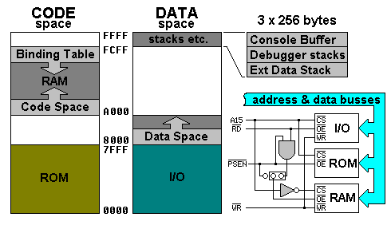

8051-based TOF implementation
The model presented here is fairly sophisticated and flexible:
The 8051 has several address spaces, each operated on by different instructions. Since the 8051 can't write to code memory, some glue logic is needed to overlap the code and data spaces. Figure 1 shows a sample circuit. The jumper block allows two possible configurations. The shown configuration makes the RAM readable using both the MOVX and MOVC instructions. Moving the shorting block saves you a gate but only allows the RAM to be read by a MOVC instruction, which means the data stack is in internal RAM. Using an external data stack generally slows the system by 20% but frees up IRAM.
Figure 1. Memory spaces of the 8051 TOF implementation.
|  |
Access to program memory always uses MOVC for read. Access to data memory tests bit 15 of the address and uses MOVX to read from low addresses and MOVC to read from high addresses. This allows peripherals to reside on the data bus between 0000 and 7FFF. The RD line enables I/O devices and the PSEN line enables the ROM and RAM. So, the 64K data space covers both SRAM and I/O devices.
On the 8051 virtual machine, code and data spaces don’t overlap. It was designed this way to enforce separation of these spaces during the design of the kernel and to allow access to I/O and RAM using the same memory operators.
Accessing internal RAM and SFRs can't be done from high level Forth. It's best to write your own code words for this, using KERNEL.F51 as an example. IRAM can be reached using @R0. SFR access is trickier since the SFR number is a hard-coded direct address. The debugger does generic access using self-modifying code.
Interrupt Service Routines
The 8051 services interrupts by jumping to locations in ROM such as 0003, 000B, etc. At each of these addresses is a LJMP instruction pointing into the binding table. The binding table directs execution to the desired ISR.
0x0003 LJMP %INT0
interrupt vector for EXT0
0x000B LJMP %INT1
interrupt vector for T0
0x0013 LJMP %INT2
interrupt vector for EXT1
0x001B LJMP %INT3
interrupt vector for T1
0x0023 LJMP %INT4
interrupt vector for UART
0x002B LJMP %INT5
interrupt vector for T2
If you look at MAIN in END.F51, you’ll see how ISRs are linked to interrupt sources:
[CFA] b_timebase ['] %INT1 bind!
[CFA] b_timebase gets the address of the ISR code
called b_timebase.
['] %INT1 bind! changes the destination of %INT1’s LJMP in
the binding table.
Special builder words
The 8051 can ony access SFRs via compiled code. Here are some compiling words that move SFRs to/from the stack. These must be used within colon definitions.
| REG@: | ( <asmlabel> -- ) | Compiles code to fetch byte from an SFR |
| ( -- c ) | Pushes an SFR's value onto the stack | |
| REG!: | ( <asmlabel> -- ) | Compiles code to store byte to an SFR |
| ( c -- ) | Stores a value to an SFR |
IFCLR and IFSET
are special versions of IF. They compile efficient bit tests
using the JB and JNB instructions.
Sample Usage: [ 3 ] IFCLR SWAP THEN is the same as DUP
8 AND 0= IF SWAP THEN.
When allocating assembler labels, HERE is used to assign their values starting from a base address. There are several kinds of data types: BIT, IRAM, and Code. Several bytes at IRAM location 0x20 are left free for use as bit variables. A block of code can allocate them using /BIT/. Bytes in IRAM can be allocated using /IRAM/. For example:
| /bit/ asmbyte mybit /bit/ |
| /iram/ asmbyte mybyte /iram/ |
| setb mybit |
| mov a, mybyte |
Example State Machine
This state machine (sISR) steps through states using a 16-bit pointer in IRAM as the state.
| /iram/ | asmbyte myvec |
| asmbyte myvec1 | |
| /iram/ | |
| code states | vector{ myvec ret c; |
| loco state2 | vector _myvec, states ret c; |
| loco state1 | vector _myvec, state2 ret c; |
| }vector state1 | |
| code sISR | push myvec1 push myvec reti c; |
This compiles to:
| 1FF8 753C20 | MOV _MYVEC, #20 |
| 1FFB 753D06 | MOV _MYVEC1, #06 |
| 1FFE 22 | RET |
| 1FFF 753C1F | MOV _MYVEC, #1F |
| 2002 753DF8 | MOV _MYVEC1, #F8 |
| 2005 22 | RET |
| 2006 753C1F | MOV _MYVEC, #1F |
| 2009 753DFF | MOV _MYVEC1, #FF |
| 200C 22 | RET |
| 200D C03D | PUSH _MYVEC1 |
| 200F C03C | PUSH _MYVEC |
| 2011 23 | RETI |